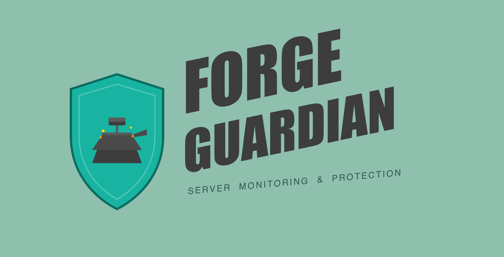

🛡 Forge Guardian¶
Hack detection & auto-healing for Laravel Forge servers.

Catches injected cache.php backdoors, obfuscated shells, tampered files, and suspicious cron jobs — then quarantines them and restores your repo to a clean state. Built for DigitalOcean + Laravel Forge, works on any server with git-managed Laravel projects.
The Problem¶
Laravel Forge servers are a common target. Attackers inject files like cache.php, config2.php, or debug.php containing obfuscated eval(base64_decode(...)) payloads. These backdoors hide in your public/ folder, storage directories, or alongside your app code. By the time you notice, they've been there for days.
The Solution¶
Forge Guardian runs every 5 minutes via cron and checks:
| Detector | What it catches |
|---|---|
| Git status | Any untracked file not in .gitignore or the allowlist — the #1 sign of injected backdoors |
| Webroot scan | .php files in public/ that aren't index.php |
| Malicious signatures | eval(base64_decode(, shell_exec($, obfuscated hex, $_REQUEST injections, etc. |
| Recent changes | PHP files modified in the last 10 minutes containing malicious code |
| Suspicious crons | Cron entries with curl pipes, wget, reverse shells |
| Bad permissions | World-writable directories, loose .env permissions |
When threats are found, it can auto-heal — quarantine malicious files (preserved for forensics) and git checkout tampered tracked files back to their clean state.
Quick Start¶
One-liner install (on the server)¶
curl -sL https://raw.githubusercontent.com/YOUR_USER/forge-guardian/main/install.sh | sudo bash
This auto-detects all Laravel projects in /home/forge/, installs the script, and runs an initial scan.
Remote deploy (from your local machine)¶
Deploy to multiple servers at once over SSH without logging into each one:
git clone https://github.com/YOUR_USER/forge-guardian.git
cd forge-guardian
# Single server
./deploy-remote.sh 142.93.1.100
# Multiple servers with Slack alerts and auto-heal
./deploy-remote.sh \
--servers examples/servers.txt \
--slack "https://hooks.slack.com/services/T00/B00/xxx" \
--mode auto-heal \
142.93.1.100 167.99.2.200
# Custom SSH key (typical for Forge)
./deploy-remote.sh --key ~/.ssh/forge_rsa 142.93.1.100
The remote deployer will:
1. SSH into each server
2. Upload forge-guardian.sh
3. Auto-detect all git-based Laravel projects in /home/forge/
4. Configure your notification webhooks
5. Install the cron job + log rotation
6. Run an initial dry-run scan so you see results immediately
Manual install¶
sudo mkdir -p /opt/forge-guardian
sudo curl -fsSL https://raw.githubusercontent.com/YOUR_USER/forge-guardian/main/forge-guardian.sh \
-o /opt/forge-guardian/forge-guardian.sh
sudo chmod +x /opt/forge-guardian/forge-guardian.sh
# Edit config — set your project directories and notifications
sudo nano /opt/forge-guardian/forge-guardian.sh
# Test
sudo /opt/forge-guardian/forge-guardian.sh --dry-run --verbose
# Add to cron (every 5 minutes)
(sudo crontab -l 2>/dev/null | grep -v forge-guardian; \
echo '*/5 * * * * /opt/forge-guardian/forge-guardian.sh --auto-heal >> /var/log/forge-guardian.log 2>&1') \
| sudo crontab -
Usage¶
forge-guardian.sh [FLAGS]
FLAGS:
--dry-run Report what would happen, take no action
--auto-heal Quarantine malicious files, git-restore tampered ones
--verbose Extra debug output
(no flags) Detect and report only
Auto-Heal Behavior¶
| File type | Action |
|---|---|
| Untracked malicious file | Moved to /opt/forge-guardian/quarantine/<run_id>/ |
| Tampered tracked file | Backed up to quarantine, then restored via git checkout |
Nothing is permanently deleted by default. Set HEAL_MODE="delete" in the config to skip quarantine.
Remote Deploy Options¶
deploy-remote.sh [OPTIONS] server1 server2 ...
OPTIONS:
--user <user> SSH user (default: root)
--key <path> SSH private key (default: ~/.ssh/id_rsa)
--port <port> SSH port (default: 22)
--servers <file> File with one server per line
--projects <dirs> Comma-separated project dirs (default: auto-detect)
--slack <url> Slack webhook URL
--discord <url> Discord webhook URL
--telegram <token:chatid> Telegram bot token and chat ID
--email <address> Email notifications (requires mailutils)
--mode <mode> "detect-only" (default) or "auto-heal"
--interval <min> Cron interval in minutes (default: 5)
--uninstall Remove Forge Guardian from target servers
--dry-run Preview without executing
Notifications¶
Configure any combination — alerts only fire when threats are found.
| Channel | Config variable | Setup |
|---|---|---|
| Slack | SLACK_WEBHOOK_URL |
Create incoming webhook |
| Discord | DISCORD_WEBHOOK_URL |
Server Settings → Integrations → Webhooks |
| Telegram | TELEGRAM_BOT_TOKEN + TELEGRAM_CHAT_ID |
@BotFather |
NOTIFICATION_EMAIL |
Requires mailutils installed on server |
When deploying remotely, pass these via flags:
./deploy-remote.sh --slack "https://hooks.slack.com/..." 142.93.1.100
Configuration¶
The top of forge-guardian.sh contains all configurable options:
# Project directories to monitor
PROJECT_DIRS=(
"/home/forge/example.com"
"/home/forge/another-site.com"
)
# Paths that are OK to be untracked (beyond .gitignore)
ALLOWLIST=(
"storage/framework/cache/*"
"storage/framework/sessions/*"
"storage/logs/*"
"vendor/*"
"node_modules/*"
# ... etc
)
# Heal mode: "quarantine" (default, keeps files) or "delete"
HEAL_MODE="quarantine"
Adding Custom Suspicious Patterns¶
SUSPICIOUS_PATTERNS=(
'cache[0-9]*\.php' # cache1.php, cache23.php
'wp-.*\.php' # WordPress-style backdoors
'shell\.php'
# Add your own:
'backdoor\.php'
)
Adding Custom Malicious Signatures¶
MALICIOUS_SIGNATURES=(
'eval\s*(\s*base64_decode'
'shell_exec\s*('
# Add your own:
'some_known_malware_string'
)
Hardening Your Forge Servers¶
If you're getting hacked repeatedly, Forge Guardian is a safety net — but you should also close the attack vectors. The most common ones:
1. Disable dangerous PHP functions¶
Add to your php.ini (or via Forge → Server → PHP Settings):
disable_functions = exec,passthru,shell_exec,system,proc_open,popen
Note: Laravel queues need
proc_open. Test before applying in production, or usepcntl_execrestrictions instead.
2. Lock down file permissions¶
# All project files owned by forge:forge
sudo chown -R forge:forge /home/forge/example.com
# Directories: 755, Files: 644
sudo find /home/forge/example.com -type d -exec chmod 755 {} \;
sudo find /home/forge/example.com -type f -exec chmod 644 {} \;
# Storage and cache need to be writable
sudo chmod -R 775 /home/forge/example.com/storage
sudo chmod -R 775 /home/forge/example.com/bootstrap/cache
# .env should be restricted
sudo chmod 600 /home/forge/example.com/.env
3. Block dotfiles and PHP in uploads via Nginx¶
Add to your Nginx server block (Forge → Site → Nginx Config):
# Block access to dotfiles
location ~ /\. {
deny all;
access_log off;
log_not_found off;
}
# Block PHP execution in storage/uploads
location ~* /storage/.*\.php$ {
deny all;
}
4. Check for unauthorized SSH keys¶
cat ~/.ssh/authorized_keys
cat /home/forge/.ssh/authorized_keys
# Remove any keys you don't recognize
5. Audit Forge deploy scripts¶
Check Forge → Site → Deploy Script for any injected commands (curl pipes, wget, etc).
6. Keep everything updated¶
composer audit # Check for known vulnerabilities
sudo apt update && sudo apt upgrade # OS patches
# Update PHP via Forge UI
7. Production basics¶
APP_DEBUG=false
APP_ENV=production
Log Rotation¶
Installed automatically by the remote deployer and one-liner installer. For manual installs, add to /etc/logrotate.d/forge-guardian:
/var/log/forge-guardian.log {
weekly
rotate 12
compress
missingok
notifempty
}
File Structure¶
forge-guardian/
├── forge-guardian.sh # Main detection & healing script (runs on server)
├── deploy-remote.sh # Deploy to servers over SSH (runs locally)
├── install.sh # One-liner curl installer (runs on server)
├── examples/
│ └── servers.txt # Example servers list file
├── LICENSE
└── README.md
Uninstall¶
# Via remote deployer
./deploy-remote.sh --uninstall 142.93.1.100
# Or manually on the server
(sudo crontab -l | grep -v forge-guardian) | sudo crontab -
sudo rm -rf /opt/forge-guardian
sudo rm -f /etc/logrotate.d/forge-guardian
# Log preserved at /var/log/forge-guardian.log
Quarantined files are preserved during uninstall for forensic review.
License¶
MIT — see LICENSE.